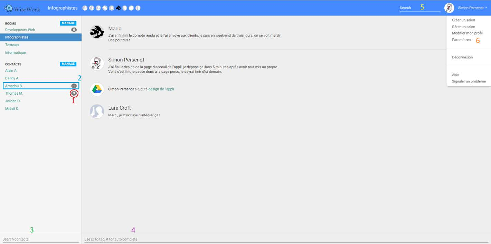

Application WiseWork
Description : Développement d'une application web de chat professionnelle permettant de partager les informations d’une entreprise rapidement et simplement. Contexte : Projet de fin d'année de formation Licence professionnel. Équipe : 7 personnes. Méthodologie utilisée : AGILE Langages : HTML, Javascript, CSS, C#. Technologies : AngularJS, SignalR, Api Google, jQuery, Bootstrap, Material Design, ASP.NET, MVC Logiciels : Visual Studio, Sublime Text.
Le but de cette application est de permettre une meilleure circulation de l’information et une optimisation du temps de travail. Le concept, qui se veut innovant, est de renseigner les fils d’actualités du réseau social à travers le chat et des mots clés prédéfinis, cette manière de procéder permet de gagner du temps car l’information est créée et diffusée simultanément.